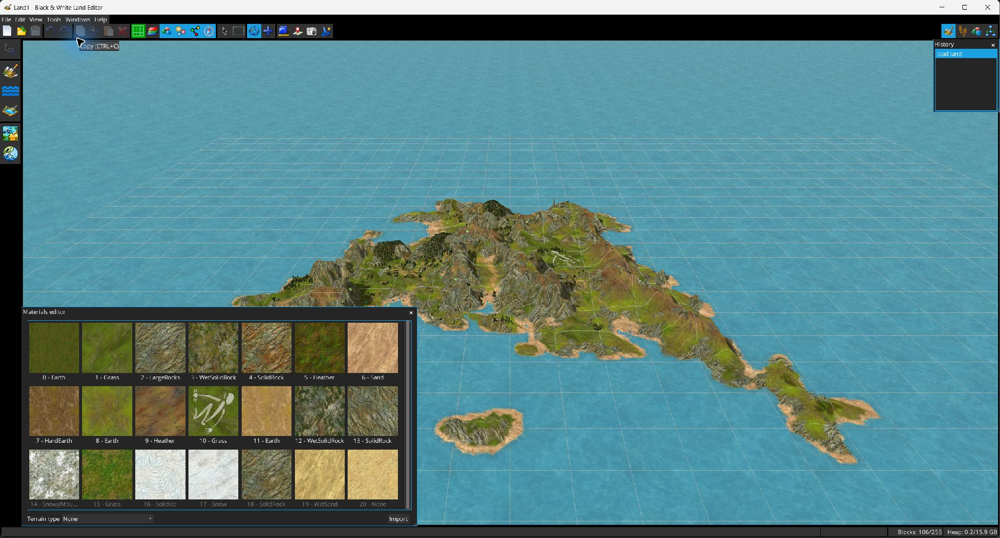

El Editor de materiales gestiona los recursos de textura utilizados por las regiones del terreno.

Usa . Los materiales se muestran como miniaturas de textura; los materiales no utilizados aparecen con etiquetas atenuadas.
| Acción | Descripción |
|---|---|
| Tipo de material del terreno | Asigna la clasificación de terreno al material seleccionado. |
| Importar material | Importa una textura PNG como recurso de material. |
| Editar textura | Abre el editor de texturas con vista previa en directo y controles Aplicar/Cancelar. |
| Duplicar | Clona el material. |
| Reemplazar apariciones | Reemplaza todas las referencias al material seleccionado por otro material. |
| Exportar | Guarda el material seleccionado como PNG. |
| Eliminar | Disponible solo cuando el material puede eliminarse de forma segura. |
La misma ventana puede abrirse en modo de selección desde otras herramientas, por ejemplo el Editor de regiones, para elegir un material en lugar de editar la lista.